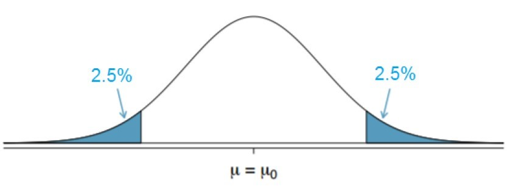

(1-pnorm(1.392))*2[1] 0.1639224Confidence Intervals and Hypothesis Testing both allow us to make inferences about a population using just the sample. With this, we can predict the likelihood of population values and state confidence in our results. We have seen that the confidence interval lets us say something along the lines of: “We are pretty certain the population mean is within this interval”. Hypothesis testing will allow us to do something similar, but instead, we will be able to compare our sample value to the claimed population value.
To perform a hypothesis test, we first have to make a claim about the population. This is what we will call the hypothesis. The null hypothesis (written as \(H_0\)) means there is no difference in the data while the alternative hypothesis (written as \(H_A\)) indicates there is a difference in the data. For instance, if we are interested in seeing if the mean is different than 7 then our starting assumption will be \(H_0: \mu= 82.3\) while the alternative hypothesis will be \(H_A: \mu \neq 82.3\). Another example is the judicial system in the United States. The idea is built on the premise that all suspects are innocent unless proven guilty. So, the starting assumption is that the client is innocent and it is the prosecutor’s job to convince us otherwise. Therefore, the null hypothesis will be \(H_0: \text{Innocent}\) while the alternative hypothesis will be \(H_A: \text{Guilty}\).
It is vital to realize that there are only 2 conclusions we can make in hypothesis testing. The first is that we can reject the null hypothesis in favor of the alternative hypothesis and the second is that we can fail to reject the null hypothesis. Failing to reject the null hypothesis means that there is no evidence to suggest the initial claim is wrong. What we can never do though is to accept the null hypothesis. Going back to our court example might help us realize this. When the jury comes back after deliberations they either proclaim the defendant is guilty (they have rejected the null hypothesis and said that there is enough evidence to say they are not innocent) or the defendant is not guilty (they have failed to reject the null hypothesis and said they do not have enough evidence to say the defendant is guilty). What they do not do is accept the null hypothesis, that is they do not proclaim the defendant innocent (as they can never be 100% sure), all they can do is say that enough evidence has been produced to show them guilty or enough evidence has not been produced to show them guilty.
The way we will do hypothesis testing is similar to confidence intervals, and they are both interconnected. Let’s look at a normal distribution centered around the population mean (which is usually the null hypothesis). We know from the previous sections that if we take a bunch of samples from the population, \(95\%\) of the sample means will fall in the “white” region while \(5\%\) of the sample means will fall in the “blue” region. If our sample mean falls in the “blue” region and is far away from the population mean, we will usually pause and question whether our sample actually came from the same population or not, as it is unlikely to be far away from \(\mu\). We could just have an unlucky sample, as it does fall in the blue region \(5\%\) of the time though.

There are a few pieces of information that should be addressed before actually carrying out our hypothesis test. The first is the significance level (\(\alpha\)), and this will identify the region where the probability of observing values under the null hypothesis is \(\alpha\). In this class we will have the significance level be \(5\%\), meaning \(\alpha/2 = 2.5\%\) is on each side. The “blue” sections are the area beyond the quantile associated with specified significance levels and we will call this the rejection region. If our value falls in the rejection region then we will reject the null hypothesis. Since we normally deal with the standard normal distribution, we will want to normalize our value, and we will call this our test statistic. The test statistic can be found in the following way:
\[ \text{test statistic} = \frac{\text{observed - hypothesis}}{\text{standard error}} \] ## P-values
The last important piece of the puzzle for us is the idea of the \(p-\)value. This \(p-\)value is the probability of observing a data value as or more extreme than the test statistic if the null hypothesis was true at the time. This will help us see if the sample mean occurred by chance or if it was highly unlikely to occur by chance then we might say the null hypothesis was not true. Particularly, if the \(p-\)value \(<\) significance level then we will reject the null hypothesis, and if the \(p-\)value \(>\) significance level then we will fail to reject the null hypothesis.
There are different types of hypothesis tests out there. In this class we will just be looking at the two-sided tests, meaning \(\alpha/2\) is on each side. This will also result in the null hypothesis always having equality and the alternative hypothesis being not equal to. You may wish to do a one-sided test and have the alternative hypothesis be less than or greater than some value, in which you will have to alter your rejection region to have \(\alpha\) on one side. But, to find the \(p-\)value we can use the \(pnorm()\) and the \(pt()\) functions similar to how we used the \(qnorm()\) and the \(qt()\) in previous lessons. The general steps for hypothesis testing can be found below, with it working the same way for means and proportions:
Let’s look at a few examples and run through the process of hypothesis testing. The nutrition label on a bag of potato chips says that a one-ounce (28-grams) serving of potato chips has 130 calories with a standard deviation of 17. A random sample of 35 bags yielded a sample mean of 134 calories. Is there evidence that the nutrition label does not provide an accurate measure of calories in the bags of potato chips?
Our first step is to formulate our hypothesis, and since we want to see if the calories are correct on the bag then we will want to use that. The starting assumption is that there are 130 calories in the bag and we want to test this claim. This gives us the following setup:
\[ H_0: \mu = 130 \\ H_A: \mu \neq 130\]
Now we will want to calculate the standard error. Since we know the population standard deviation (\(\sigma = 17\)) then we can use \(\text{SE}=\frac{\sigma}{\sqrt{n}}\), where \(n\) is the sample size. This gives us: \[ \text{SE} = \frac{17}{\sqrt{35}} \approx 2.874 \]
We can see how many standard errors our observation was off by calculating the test statistic. We observed the sample mean to be 134, so we can find the test statistic as: \[ \text{test statistic} = t = \frac{\text{observed - hypothesis}}{\text{SE}} = \frac{134-130}{2.874} \approx 1.392\]
So, our test statistic is 1.392 standard errors above the mean. If we were to draw a picture we could visualize the rejection regions to determine what the outcome of our hypothesis test would be. Since we have a known population standard deviation then the rejection region would be less than \(qnorm(.025)=-1.96\) and greater than \(qnorm(0.975)=1.96\). Since the test statistic does not fall in the rejection region then we will fail to reject the null hypothesis. But lets look at the \(p-\)value to confirm this thought process.
To do this, going back to our picture might help. We will want to see the probability of being more extreme than the test statistic. So, we will need to see the probability of being greater than 1.392 and less than -1.392. To do this we will use the \(pnorm()\) function. This will tell us the probability of being less than a value, so if we want to find the probability of being greater than the value then we will need to do \(1 - pnorm()\). We can then double this value since it is symmetric to get the p-value.
(1-pnorm(1.392))*2[1] 0.1639224Because the \(p-\)value of 0.164 \(> alpha\) (0.05) we will fail to reject the null hypothesis. That is, we do not have enough evidence to suggest that the mean number of calories is different than 130. We are not saying the mean is 130, just that we don’t have enough evidence to suggest it isn’t 130.
Let’s look at another example. In the 1990s, doctors claimed the mean birth weight of babies was 7.3 pounds (don’t quote me on this as I made it up). Using the ‘births’ dataset in the ‘openintro’ library run a hypothesis test to see if the mean weight is different than 7.3 pounds. So, when we formulate our hypothesis we are told that the mean weight is 7.3 pounds, so this is our starting assumption. This gives us the following setup:
\[ H_0: \mu = 7.3 \\ H_A: \mu \neq 7.3\]
We can then check our assumptions by visualizing the data and seeing that it is not terribly skewed. Since we are not told the population standard deviation then we will need to estimate it using our sample. Since we are doing this, we will instead need to use the \(t-\)distribution instead of the normal distribution. This will give us a little extra buffer room to be wrong.
Next, we can calculate our standard error and the test statistic as follows:
library(openintro)se <- sd(births$weight)/sqrt(length(births$weight))
t <- (mean(births$weight)-7.3)/se
t[1] -2.077765This shows us that our test statistic is -2.078 standard errors below the hypothesized mean. Drawing a picture will be helpful for us to determine our rejection regions and our \(p-\)values. Since we are dealing with the \(t-\)distribution then we need to find the rejection region to be less than \(qt(.025, df=\text{length(births\$weight)}-1)=-1.98\) and greater than \(qt(.975, df=\text{length(births\$weight)}-1)=1.98\). So, based on this we will reject the null hypothesis because our test statistic falls in the rejection regions. But lets look at the \(p-\)value to confirm this thought process.
We can calculate the \(p-\)value in a similar way to how we did it in the prior example, except now we do not need the “1-” part since the test statistic is negative. So, the \(p-\)value will be calculated as:
pt(t, df=length(births$weight)-1)*2[1] 0.03944668With this, we can see that the \(p-\)value (0.039) \(<\) the level of significance (0.05) so we will reject the null hypothesis. What this means is that we have evidence to suggest that the mean is not 7.3 pounds.
There are functions in R that will allow us to run hypothesis tests if we pass it the data. In the last section, we saw the function \(t.test()\) which will create confidence intervals for us, but it will also calculate \(p-\)values and let us set up our hypothesis tests. Below is an example of how we could do it, and notice that I put the hypothesized mean in the function:
t.test(births$weight, mu=7.3)
One Sample t-test
data: births$weight
t = -2.0778, df = 149, p-value = 0.03945
alternative hypothesis: true mean is not equal to 7.3
95 percent confidence interval:
6.804439 7.287561
sample estimates:
mean of x
7.046 You can notice that we get the exact same test statistic and \(p-\)value as we did when we did it manually. It is vital to know how to do it manually though, as we will not always be able to pass our information into a function to do it for us.